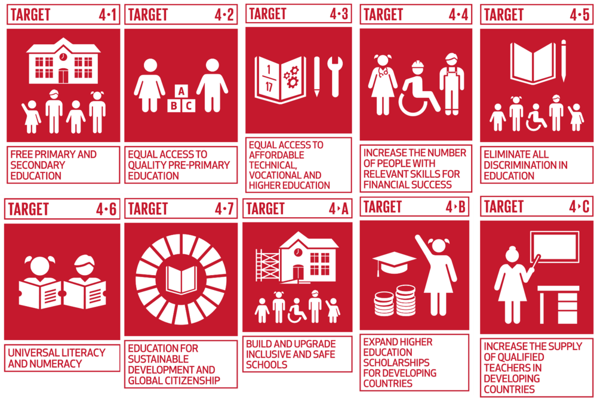
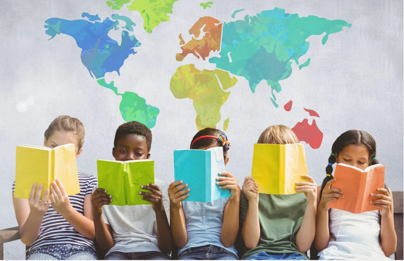
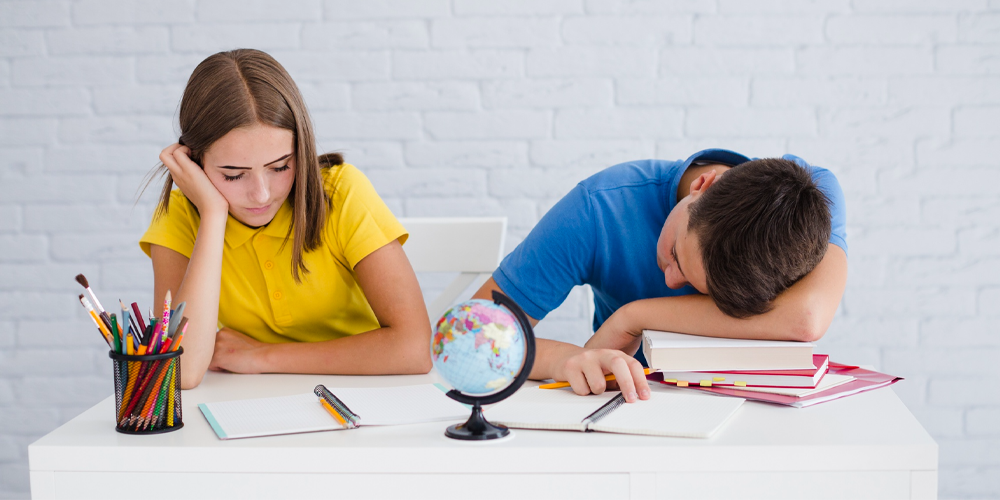
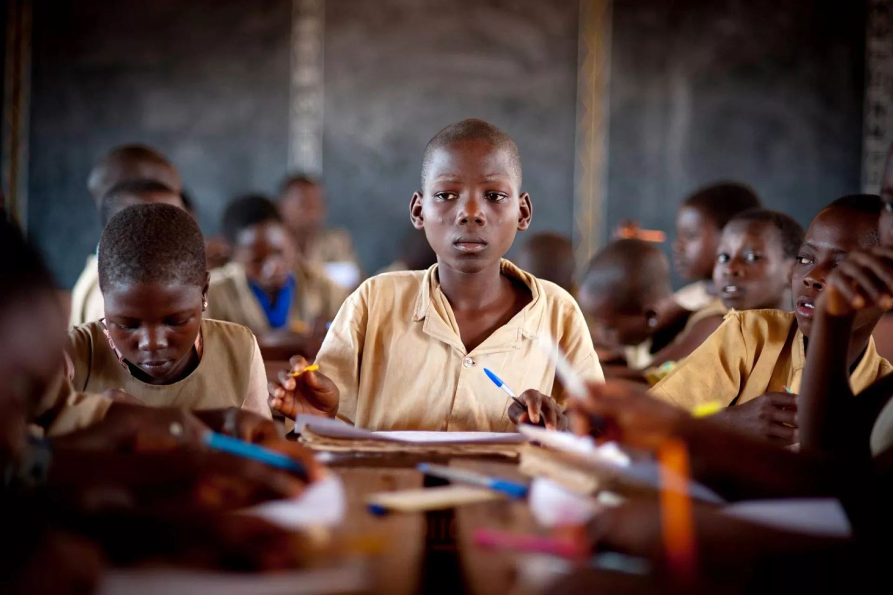

What are the Sustainable Development Goals (SDGs)?

The Sustainable Development Goals (SDGs) are a set of 17 global goals adopted by all United Nations (UN) member states in 2015 as part of the 2030 Agenda for Sustainable Development. These goals aim to address global challenges such as poverty, inequality, climate change, environmental degradation, peace, and justice.
No Poverty: End poverty in all its forms everywhere.
Zero Hunger: End hunger, achieve food security, and promote sustainable agriculture.
Good Health and Well-being: Ensure healthy lives and promote well-being for all ages.
Quality Education: Ensure inclusive and equitable quality education.
Gender Equality: Achieve gender equality and empower all women and girls.
Clean Water and Sanitation: Ensure availability and sustainable management of water and sanitation.
Affordable and Clean Energy: Ensure access to sustainable and modern energy for all.
Decent Work and Economic Growth: Promote sustained, inclusive economic growth and productive employment.
Industry, Innovation, and Infrastructure: Build resilient infrastructure and promote sustainable industrialization.
Reduced Inequalities: Reduce inequality within and among countries.
Sustainable Cities and Communities: Make cities and human settlements inclusive and sustainable.
Responsible Consumption and Production: Ensure sustainable consumption and production patterns.
Climate Action: Take urgent action to combat climate change.
Life Below Water: Conserve and sustainably use the oceans, seas, and marine resources.
Life on Land: Protect, restore, and promote sustainable ecosystems and biodiversity.
Peace, Justice, and Strong Institutions: Promote peaceful and inclusive societies for sustainable development.
Partnerships for the Goals: Strengthen global partnerships for sustainable development.
Introduction to SDG 4

Sustainable Development Goal 4 (SDG 4) focuses on ensuring inclusive and equitable quality education and promoting lifelong learning opportunities for all. Established by the United Nations as part of the 2030 Agenda for Sustainable Development, SDG 4 aims to eliminate disparities in education and improve learning outcomes worldwide. This report explores the importance, challenges, and progress of achieving quality education globally.
Importance of Quality Education

Education is a fundamental human right and a crucial driver of social and economic development. Quality education empowers individuals, reduces poverty, promotes gender equality, and fosters sustainable growth. Key benefits of quality education include:
1. Improved employment opportunities and economic development.
2. Enhanced civic participation and democratic governance.
3. Reduction of inequalities and social injustices.
4. Promotion of innovation and technological advancement.
Targets and Indicators of SDG 4
SDG 4 comprises several targets designed to address various aspects of education. Some key targets include:
4.1: Ensure that all children complete free, equitable, and quality primary and secondary education.
4.2: Provide access to quality early childhood development and pre-primary education.
4.3: Ensure equal access to affordable and quality technical, vocational, and tertiary education.
4.4: Increase the number of youth and adults with relevant skills for employment and entrepreneurship.
4.5: Eliminate gender disparities and ensure equal education access for vulnerable populations.
4.6: Ensure all youth and adults achieve literacy and numeracy.
4.7: Promote sustainable development education, including global citizenship and cultural awareness.
Quality Education in Different Countries
Several countries have made significant progress in providing high-quality education systems. Some of the top-performing countries in education include:
Finland: Known for its student-centered approach, highly trained teachers, and minimal standardized testing, Finland consistently ranks among the best education systems globally.
Singapore: Focuses on a rigorous curriculum, innovative teaching methods, and strong government support to produce top-performing students.
Canada: Offers high-quality education with strong public school systems, equitable access, and a diverse curriculum.
Japan: Prioritizes discipline, high academic standards, and a strong work ethic in its education system.
Korea: Has a highly competitive education system with an emphasis on STEM fields and academic excellence.
Netherlands: Offers a balanced curriculum with a focus on creativity, innovation, and student well-being.
Germany: Provides a strong vocational training system alongside traditional academic education, ensuring job readiness for students.
Sri Lanka: Offers free education from primary to university level, contributing to high literacy rates. The country has a strong emphasis on public education, though challenges such as resource limitations and rural-urban disparities persist.
These countries have achieved success through well-funded education systems, skilled teachers, and policies that emphasize equality and innovation.
Challenges in Achieving SDG 4
Despite progress, several challenges hinder the achievement of SDG 4, including:
Access and Affordability: Many children, particularly in low-income countries, lack access to education due to poverty, conflict, and geographical barriers.
Quality of Education: Inadequate infrastructure, outdated curricula, and insufficient teacher training affect learning outcomes.
Gender Disparities: Girls in many regions face obstacles such as early marriage, cultural norms, and discrimination.
Technological Divide: The digital gap limits access to online education and learning resources in underdeveloped areas.
Impact of COVID-19: The pandemic disrupted education globally, increasing learning losses and school dropouts.
Progress and Initiatives
Governments, international organizations, and non-profits are implementing policies and initiatives to advance SDG 4. Some notable efforts include:
UNESCO’s Global Education Monitoring Report:Tracks progress and highlights best practices.
Education for All (EFA) Initiative:Promotes universal primary education and gender equality.
Digital Learning Programs: Expanding access through online platforms and low-cost educational technology.
Scholarships and Financial Aid: Supporting students from disadvantaged backgrounds.
Public-Private Partnerships: Collaborations between governments and businesses to enhance education infrastructure and resources.
Conclusion
SDG 4 is vital for creating a more equitable and sustainable world. While significant progress has been made, continued efforts are needed to overcome persistent challenges. Governments, educators, and stakeholders must work collaboratively to ensure
Back to Top